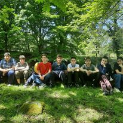
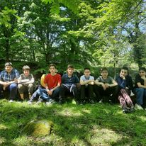

ჩემი სახელია ილია ვარ 13 წლის ჩემი ჰობია ხატვა მუსიკის მოსმენა საიტების შექმნა კოდების წერა მინდა გამოვიდე დეველოპერი ვსწავლებ გოაში მე ზალიან მომწონს გოა იქ ზალიან კარგი გარემოა ძალიან მომწონს სახვიტი და გამოყენებითი ხელოვნება ჩემი საყვარელი ფოტოა ის რომელიც ჩემს მეგობრებთან გადავიღე
 
ფავორიტი ვიდეოები

ფავორიტი ვიდეოები